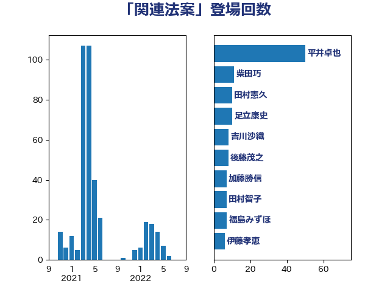

単語「関連法案」

| 平井卓也 | 自由民主党 | 50 回 |
| 柴田巧 | 日本維新の会 | 11 回 |
| 田村憲久 | 自由民主党 | 10 回 |
| 足立康史 | 日本維新の会 | 10 回 |
| 吉川沙織 | 立憲民主党 | 8 回 |
| 後藤茂之 | 自由民主党 | 8 回 |
| 加藤勝信 | 自由民主党 | 7 回 |
| 田村智子 | 日本共産党 | 7 回 |
| 福島みずほ | 社会民主党 | 7 回 |
| 伊藤孝恵 | 国民民主党 | 6 回 |
| 石川博崇 | 公明党 | 6 回 |
| 赤羽一嘉 | 公明党 | 6 回 |
| 塩川鉄也 | 日本共産党 | 5 回 |
| 杉久武 | 公明党 | 5 回 |
| 菅義偉 | 自由民主党 | 5 回 |
| 萩生田光一 | 自由民主党 | 5 回 |
| 麻生太郎 | 自由民主党 | 5 回 |
| 中谷一馬 | 立憲民主党 | 4 回 |
| 吉田宣弘 | 公明党 | 4 回 |
| 山際大志郎 | 自由民主党 | 4 回 |
| 平木大作 | 公明党 | 4 回 |
| 中島克仁 | 立憲民主党 | 3 回 |
| 城井崇 | 立憲民主党 | 3 回 |
| 宮崎政久 | 自由民主党 | 3 回 |
| 小宮山泰子 | 立憲民主党 | 3 回 |
| 末松信介 | 自由民主党 | 3 回 |
| 河野義博 | 公明党 | 3 回 |
| 伊藤孝江 | 公明党 | 2 回 |
| 古賀友一郎 | 自由民主党 | 2 回 |
| 嘉田由紀子 | 無所属 | 2 回 |
| 大塚耕平 | 国民民主党 | 2 回 |
| 小沼巧 | 立憲民主党 | 2 回 |
| 山田太郎 | 自由民主党 | 2 回 |
| 平将明 | 自由民主党 | 2 回 |
| 後藤祐一 | 立憲民主党 | 2 回 |
| 斉藤鉄夫 | 公明党 | 2 回 |
| 本村伸子 | 日本共産党 | 2 回 |
| 本田太郎 | 自由民主党 | 2 回 |
| 牧島かれん | 自由民主党 | 2 回 |
| 玉木雄一郎 | 国民民主党 | 2 回 |
| 田中英之 | 自由民主党 | 2 回 |
| 石川大我 | 立憲民主党 | 2 回 |
| 鈴木俊一 | 自由民主党 | 2 回 |
| 馬場成志 | 自由民主党 | 2 回 |
| 下野六太 | 公明党 | 1 回 |
| 中村裕之 | 自由民主党 | 1 回 |
| 中野洋昌 | 公明党 | 1 回 |
| 伊藤俊輔 | 立憲民主党 | 1 回 |
| 伊藤岳 | 日本共産党 | 1 回 |
| 伊藤渉 | 公明党 | 1 回 |
| 佐藤茂樹 | 公明党 | 1 回 |
| 勝部賢志 | 立憲民主党 | 1 回 |
| 古川康 | 自由民主党 | 1 回 |
| 吉川元 | 立憲民主党 | 1 回 |
| 吉川赳 | 無所属 | 1 回 |
| 吉田統彦 | 立憲民主党 | 1 回 |
| 吉良よし子 | 日本共産党 | 1 回 |
| 宮崎雅夫 | 自由民主党 | 1 回 |
| 小野泰輔 | 日本維新の会 | 1 回 |
| 山口那津男 | 公明党 | 1 回 |
| 岸田文雄 | 自由民主党 | 1 回 |
| 打越さく良 | 立憲民主党 | 1 回 |
| 新垣邦男 | 立憲民主党 | 1 回 |
| 新谷正義 | 自由民主党 | 1 回 |
| 朝日健太郎 | 自由民主党 | 1 回 |
| 杉尾秀哉 | 立憲民主党 | 1 回 |
| 東徹 | 日本維新の会 | 1 回 |
| 松沢成文 | 日本維新の会 | 1 回 |
| 松野博一 | 自由民主党 | 1 回 |
| 柚木道義 | 立憲民主党 | 1 回 |
| 柳ヶ瀬裕文 | 日本維新の会 | 1 回 |
| 根本幸典 | 自由民主党 | 1 回 |
| 森山浩行 | 立憲民主党 | 1 回 |
| 森本真治 | 立憲民主党 | 1 回 |
| 森田俊和 | 立憲民主党 | 1 回 |
| 横沢高徳 | 立憲民主党 | 1 回 |
| 武田良太 | 自由民主党 | 1 回 |
| 武部新 | 自由民主党 | 1 回 |
| 池下卓 | 日本維新の会 | 1 回 |
| 河西宏一 | 公明党 | 1 回 |
| 浜田聡 | NHK党 | 1 回 |
| 源馬謙太郎 | 立憲民主党 | 1 回 |
| 片山大介 | 日本維新の会 | 1 回 |
| 玄葉光一郎 | 立憲民主党 | 1 回 |
| 田村まみ | 国民民主党 | 1 回 |
| 石井啓一 | 公明党 | 1 回 |
| 石井章 | 日本維新の会 | 1 回 |
| 石橋通宏 | 立憲民主党 | 1 回 |
| 礒崎哲史 | 国民民主党 | 1 回 |
| 笠井亮 | 日本共産党 | 1 回 |
| 簗和生 | 自由民主党 | 1 回 |
| 荒井優 | 立憲民主党 | 1 回 |
| 落合貴之 | 立憲民主党 | 1 回 |
| 藤井比早之 | 自由民主党 | 1 回 |
| 藤川政人 | 自由民主党 | 1 回 |
| 西銘恒三郎 | 自由民主党 | 1 回 |
| 足立敏之 | 自由民主党 | 1 回 |
| 道下大樹 | 立憲民主党 | 1 回 |
| 野田聖子 | 自由民主党 | 1 回 |
| 鈴木淳司 | 自由民主党 | 1 回 |
| 長浜博行 | 無所属 | 1 回 |
| 青木愛 | 立憲民主党 | 1 回 |
| 高木かおり | 日本維新の会 | 1 回 |